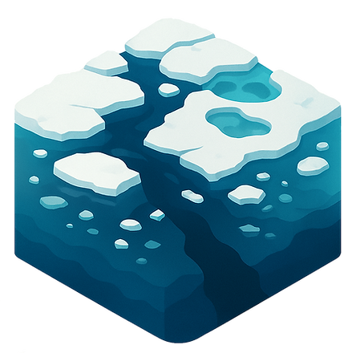
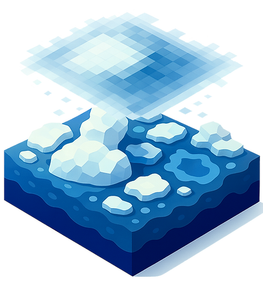

Sea Ice Characterization
Landfast sea ice
Ice lead & melt pond
Floe size

Landfast sea ice
Ice lead & melt pond
Floe size

Melt pond Fraction
Sea Ice Concentration (SIC)
Floe Fragmentation Index
SIC short-term prediction
SIC long-term prediction
Last updated : 2026/09/07
Kim, W., Sim, S., Lee, S., Stroeve, J., Han, D., & Im, J. (2025). A novel sea ice floe fragmentation index using Sentinel-2 and AMSR2 satellite data based on machine learning. International Journal of Applied Earth Observation and Geoinformation, 144, 104911.
Kim, Y. J., Kim, H. C., Han, D., Stroeve, J., & Im, J. (2025). Long-term prediction of Arctic sea ice concentrations using deep learning: Effects of surface temperature, radiation, and wind conditions. Remote Sensing of Environment, 318, 114568.
Kim, M., Kim, H. C., Im, J., Lee, S., & Han, H. (2020). Object-based landfast sea ice detection over West Antarctica using time series ALOS PALSAR data. Remote Sensing of Environment, 242, 111782.
Kim, Y. J., Kim, H. C., Han, D., Lee, S., & Im, J. (2020). Prediction of monthly Arctic sea ice concentrations using satellite and reanalysis data based on convolutional neural networks. Cryosphere, 14(3), 1083-1104.
Lee, S., Kim, H. C., & Im, J. (2018). Arctic lead detection using a waveform mixture algorithm from CryoSat-2 data. Cryoshpere, 12(1), 1665-1679.
Han, D., Kim, Y. J., Im, J., Lee, S., Lee, Y., & Kim, H. C. (2018). The estimation of arctic air temperature in summer based on machine learning approaches using IABP buoy and AMSR2 satellite data. Korean Journal of Remote Sensing, 34(6_2), 1261-1272.
Lee, S., Im, J., Kim, J., Kim, M., Shin, M., Kim, H. C., & Quackenbush, L. J. (2016). Arctic sea ice thickness estimation from CryoSat-2 satellite data using machine learning-based lead detection. Remote Sensing, 8(9), 698.
Han, H., Im, J., & Kim, H. C. (2016). Variations in ice velocities of Pine Island Glacier Ice Shelf evaluated using multispectral image matching of Landsat time series data. Remote Sensing of Environment, 186, 358-371.
Han, H., Im, J., Kim, M., Sim, S., Kim, J., Kim, D. J., & Kang, S. H. (2016). Retrieval of melt ponds on arctic multiyear sea ice in summer from terrasar-x dual-polarization data using machine learning approaches: A case study in the chukchi sea with mid-incidence angle data. Remote Sensing, 8(1), 57.
Kim, M., Im, J., Han, H., Kim, J., Lee, S., Shin, M., & Kim, H. C. (2015). Landfast sea ice monitoring using multisensor fusion in the Antarctic. GIScience & Remote Sensing, 52(2), 239-256.
{kind=link}
{kind=link}
{kind=link}
{kind=link}